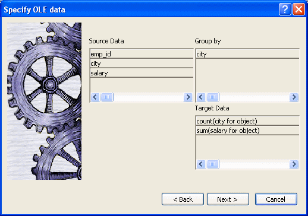
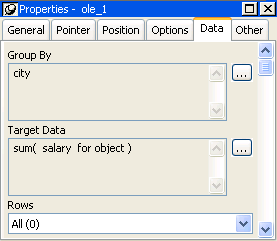

Whether you insert an OLE object into a DataWindow object or create a new DataWindow object using the OLE presentation style, you are working with an OLE container object within the DataWindow object.
They have these characteristics in common:
The OLE object in a DataWindow object and the OLE presentation style have these main differences:
 Not all servers are appropriate The features of the OLE server application determine whether
it can provide useful information in a DataWindow object.
Not all servers are appropriate The features of the OLE server application determine whether
it can provide useful information in a DataWindow object.
This section includes procedures for:
To add an OLE object to a DataWindow object, you begin by specifying where you want the OLE object and opening the Insert Object dialog box so you can define the OLE object.
 Adding an ActiveX control Adding an ActiveX control to a DataWindow object is similar to adding
an OLE object. Both exist within the DataWindow object with other controls, such
as columns, computed fields, and text controls. Use the following procedure
whether you want to add an OLE object or an ActiveX control to an existing DataWindow object.
Adding an ActiveX control Adding an ActiveX control to a DataWindow object is similar to adding
an OLE object. Both exist within the DataWindow object with other controls, such
as columns, computed fields, and text controls. Use the following procedure
whether you want to add an OLE object or an ActiveX control to an existing DataWindow object.
 To place an OLE object in a DataWindow object:
To place an OLE object in a DataWindow object:
Open the DataWindow object that will contain the OLE object.
Select Insert>Control>OLE Object from the menu bar, or from the toolbar, click the Object drop-down arrow and select the OLE button (not OLE Database Blob).
Click where you want to place the OLE object.
PowerBuilder displays the Insert Object dialog box.
To use the Insert Object dialog box, see "Defining the OLE object".
Use the OLE presentation style to create a DataWindow object that consists of a single OLE object. The following procedure creates the new DataWindow object and opens the Insert Object dialog box.
 To create a new DataWindow object using the OLE presentation
style:
To create a new DataWindow object using the OLE presentation
style:
In the New dialog box, select OLE 2.0 from the DataWindow tab and click OK.
Select data for the DataWindow object as you do for any DataWindow object.
For more information about selecting data, see Chapter 18, "Defining DataWindow Objects ."
Specify how the OLE object will use the DataWindow object's data on the Specify OLE Data page:

You can drag the columns you want the OLE object to use to the Target Data box. You can also control the grouping of data and edit the expression for a column. If necessary, you can change these specifications later.
For more information, see "Specifying data for the OLE object".
Click Next, and then click Finish.
PowerBuilder displays the Insert Object dialog box in which you define the OLE object.
To use the Insert Object dialog box, see "Defining the OLE object".
You define the OLE object in the Insert Object dialog box. It has three tab pages:
This section contains procedures for each of these selections.
Use the following procedure if you want to embed a new OLE server object.
 To embed a new OLE server object using the Create
New tab:
To embed a new OLE server object using the Create
New tab:
Select the Create New tab.
In the Object Type box, highlight the OLE server you want to use.
You can click Browse to get information about the server from the registry.
Optionally display the OLE object as an icon by doing one of the following:
Click OK.
The OLE object is inserted in your DataWindow object and the OLE server is activated. Depending on the OLE server and whether or not you have already specified how the OLE object will use the DataWindow object's data, the object may be empty or may show an initial presentation of the OLE object. Close the server application and, if you are inserting an OLE object in a DataWindow object, specify the object's properties (see "Specifying properties for OLE objects").
Use the following procedure if you want to link or embed the contents of an existing file as an OLE object so that it can be activated using the application that created it. Most of the steps in this procedure are the same as those for embedding a new OLE server object.
 A server application must be available You (and the user) must have an application that can act as
a server for the type of object you link or embed. For example,
if you insert a BMP file, it displays because an application that
can handle bitmaps is installed with Windows. If you insert a GIF
or JPEG file, it displays only if you have a third-party graphics application
installed.
A server application must be available You (and the user) must have an application that can act as
a server for the type of object you link or embed. For example,
if you insert a BMP file, it displays because an application that
can handle bitmaps is installed with Windows. If you insert a GIF
or JPEG file, it displays only if you have a third-party graphics application
installed.
 To link or embed an existing object using the
Create From File tab:
To link or embed an existing object using the
Create From File tab:
Select the Create From File tab.
Specify the file name in the File Name box. If you do not know the name of the file, click the Browse button and select a file in the dialog box.
To create a link to the file, rather than embed a copy of the object in the control, select the Link check box.
Click OK.
The OLE object is inserted in your DataWindow object and the OLE server is activated. Depending on the OLE server and whether or not you have already specified how the OLE object will use the DataWindow object's data, the object might be empty or might show an initial presentation of the OLE object. Close the server application and, if you are inserting an OLE object in a DataWindow object, specify the object's properties (see "Specifying properties for OLE objects").
Use the following procedure if you want to insert an ActiveX control (OLE custom control) in the DataWindow object.
 To insert an ActiveX control using the Insert
Control tab:
To insert an ActiveX control using the Insert
Control tab:
Select the Insert Control tab.
In the Control Type box, highlight the ActiveX control you want to use, or, if the ActiveX control you want has not been registered, click Register New.
If you select an existing ActiveX control, you can click Browse to get more information about it. ActiveX controls are self documenting. PowerBuilder gets the property, event, and function information from the ActiveX control itself from the registry.
If you click Register New, you are prompted for the file that contains the registration information for the ActiveX control.
Click OK.
If you did not specify how the OLE object will use the DataWindow object's data when you created the DataWindow object, do so on the Data property page.
If you have inserted an ActiveX control that does not display data, such as the Clock control, you do not need to transfer data to it.
For more information, see "Specifying data for the OLE object".
For OLE objects, you need to specify how the OLE object will use the DataWindow object's data. If you used the OLE presentation style, you did this when you created the DataWindow object.
If you are inserting an OLE object in an existing DataWindow object, you can also associate the object with the current row. If you are using the OLE presentation style, the OLE object is always associated with all rows.
 To specify properties for an OLE object:
To specify properties for an OLE object:
Select the Data property page in the Properties view.
Specify how the OLE object will use the DataWindow object's data.
For more information, see "Specifying data for the OLE object".
(Optional) To associate the object with the current row, select the Position property page and change the value in the Layer box to Band.
Click OK when you have finished.
You set data specifications for an OLE object in a DataWindow object on the Data property page in the Properties view. You can also use the Data property page to modify the data specifications you made in the wizard for a DataWindow object using the OLE presentation style.
When an OLE object is part of a DataWindow object, you can specify that some or all of the data the DataWindow object retrieves be transferred to the OLE object too. You can specify expressions instead of the actual columns so that the data is grouped, aggregated, or processed in some way before being transferred.
The way the OLE object uses the data depends on the server. For example, data transferred to Microsoft Excel is displayed as a spreadsheet. Data transferred to Microsoft Graph populates its datasheet, which becomes the data being graphed.
Some ActiveX controls do not display data, so you would not transfer any data to them. For an ActiveX control such as Visual Speller, you would use automation to process text when the user requests it.
Two boxes on the Data property page list data columns or expressions:
If you are using the OLE presentation style, you populated the Group By and Target Data boxes when you created the DataWindow object. If you placed an OLE object in an existing DataWindow object, the boxes are empty. You use the browse buttons next to the Group By and Target Data boxes to open dialog boxes where you can select the data you want to use or modify your selections.
 Modifying source data You cannot modify the source data for the DataWindow object on the
Data property page. Select Design>Data Source from the
menu bar if you need to modify the data source.
Modifying source data You cannot modify the source data for the DataWindow object on the
Data property page. Select Design>Data Source from the
menu bar if you need to modify the data source.
 To select or modify how data will be grouped in
the OLE object:
To select or modify how data will be grouped in
the OLE object:
Click the Browse button next to the Group By box.
In the Modify Group By dialog box, drag one or more columns from the Source Data box to the Group By box.
You can rearrange columns and specify an expression instead of the column name if you need to. For more information, see the next procedure.
 To select or modify which data columns display
in the OLE object:
To select or modify which data columns display
in the OLE object:
Click the Browse button next to the Target Data box.
In the Modify Target Data dialog box, drag one or more columns from the Source Data box to the Target Data box.
The same source column can appear in both the Group By and Target Data box.
If necessary, change the order of columns by dragging them up or down within the Target Data box.
The order of the columns and expressions is important to the OLE server. You need to know how the server will use the data to choose the order.
Double-click an item in the Target Data box to specify an expression instead of a column.
In the Modify Expression dialog box, you can edit the expression or use the Functions or Columns boxes and the operator buttons to select elements of the expression. For example, you may want to specify an aggregation function for a column. Use the range for object if you use an aggregation function; for example, sum (salary for object).
For more information about using operators, expressions, and functions, see the DataWindow Reference .
Example of a completed Data property page This example of the Data property page specifies two columns to transfer to Microsoft Graph: city and salary. Graph expects the first column to be the categories and the second column to be the data values. The second column is an aggregate so that the graph will show the sum of all salaries in each city:

The last setting on the Data property page specifies how the OLE object is associated with rows in the DataWindow object. The selection (all rows, current row, or page) usually corresponds with the band where you placed the OLE object, as explained in this table. If you used the OLE presentation style to create the DataWindow object, this setting does not display on the property page: the OLE object is always associated with all the rows in the DataWindow object.
 Range of rows and activating the object When the range of rows is Current Row or Page, the user cannot activate
the OLE object. The user can see contents of the object in the form
of an image presented by the server but cannot activate it.
Range of rows and activating the object When the range of rows is Current Row or Page, the user cannot activate
the OLE object. The user can see contents of the object in the form
of an image presented by the server but cannot activate it.
The Options property page in the OLE object's Properties view has some additional settings. They are similar to the settings you can make for the OLE control in a window. These settings display on the General property page for OLE DataWindow objects. Table 31-2 describes the settings you can make.
Previewing the DataWindow object lets you see how the OLE object displays the data from the DataWindow object. You can preview in the Preview view or in preview mode
 To preview the DataWindow object with the OLE object
in preview mode:
To preview the DataWindow object with the OLE object
in preview mode:
Select File>Run/Preview from the menu bar, or click the Run/Preview button on the PowerBar.
Select Rows>Retrieve from the menu bar.
The DataWindow object retrieves rows from the database and replaces the initial presentation of the OLE object with an image of the data that the OLE server provides.
If you associated the OLE object with all rows, activate the OLE object by double-clicking on it.
Although you can edit the presentation or the data in the server, your changes do not affect the DataWindow object's data.
 You cannot always activate the OLE object If the OLE object is associated with individual rows in the
detail band or with the page, you (and the user) cannot activate
it; you can only view it.
You cannot always activate the OLE object If the OLE object is associated with individual rows in the
detail band or with the page, you (and the user) cannot activate
it; you can only view it.
Close the preview window.
Closing the preview window or the Preview view deactivates the OLE object.
PowerBuilder stores an initial presentation of the OLE object that it displays before data is retrieved and in newly inserted rows. When you activate the OLE object in the Design view, you are editing the initial presentation of the OLE object. Any changes you make and save affect only this initial presentation. After rows are retrieved and data transferred to the OLE object, an object built using the data replaces the initial presentation.
PowerBuilder displays the initial presentation of the OLE object while it is retrieving rows and then replaces it with the retrieved data.
After you activate the OLE object in preview or at execution time, you can edit the presentation of the data. However, you cannot save these changes. The object is recreated whenever data from retrieved rows is transferred to the OLE object.
For more information, see "Activating OLE objects".
 Saving as a PSR You can save the object with its data by saving the DataWindow object as
a Powersoft report (PSR). Select File>Save As File or File>Save
Rows As from the menu bar.
Saving as a PSR You can save the object with its data by saving the DataWindow object as
a Powersoft report (PSR). Select File>Save As File or File>Save
Rows As from the menu bar.
 To activate the OLE object in the container in
the Design view:
To activate the OLE object in the container in
the Design view:
Select Open from the container's pop-up menu.
Selecting Open from an ActiveX control's pop-up menu has no effect. ActiveX controls are always active.
In the DataWindow painter, you can change or remove the OLE object in the OLE container object.
 To delete the OLE object in the container:
To delete the OLE object in the container:
Select Delete from the container's pop-up menu.
The container object is now empty and cannot be activated.
 To change the OLE object in the container:
To change the OLE object in the container:
Select Insert from the container's pop-up menu.
PowerBuilder displays the Insert Object dialog box.
Choose one of the tabs and specify the type of object you want to insert, as you did when you defined the object.
Click OK.